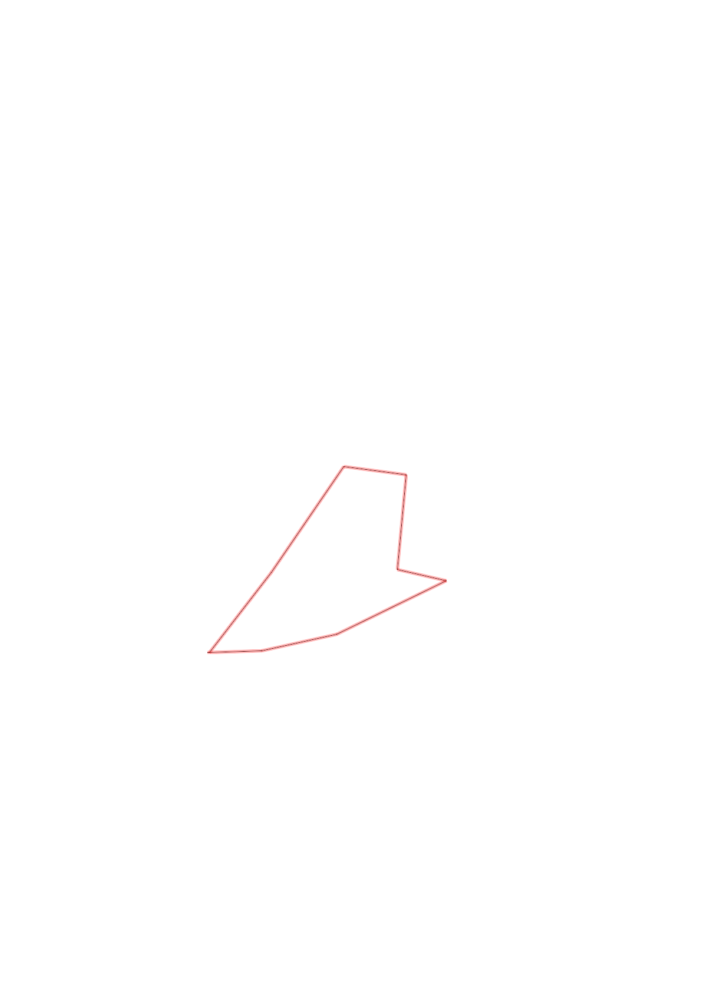
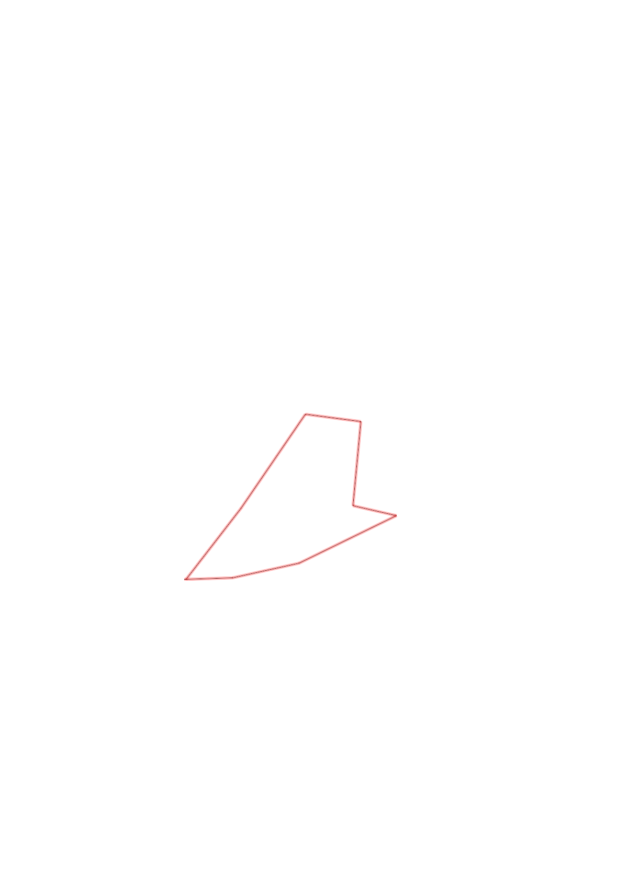

| Control |
Points |
Time Punched |
Distance |
Your Time |
Pace |
Place |
Fastest Time |
Median Time |
% Behind Fastest |
| 63 |
60 |
|
0.24 |
0:14:20 |
59:43 |
13 / 13 |
0:01:34 |
0:02:05 |
814% |
| 80 |
80 |
|
0.34 |
0:10:27 |
30:44 |
5 / 5 |
0:03:33 |
0:03:47 |
194% |
| 60 |
60 |
|
0.54 |
0:04:29 |
08:18 |
2 / 4 |
0:03:54 |
0:04:43 |
14% |
| 48 |
40 |
|
0.22 |
0:06:17 |
28:33 |
2 / 2 |
0:03:10 |
0:04:43 |
98% |
| 59 |
50 |
|
0.43 |
0:03:55 |
09:06 |
1 / 3 |
0:03:55 |
0:04:25 |
0% |
| 36 |
30 |
|
0.28 |
0:03:33 |
12:40 |
5 / 6 |
0:02:35 |
0:03:26 |
37% |
| 41 |
40 |
|
0.57 |
0:09:50 |
17:15 |
3 / 4 |
0:04:05 |
0:09:13 |
140% |
| Finish |
0 |
|
0.45 |
0:04:23 |
09:44 |
2 / 3 |
0:02:28 |
0:04:23 |
77% |
Total Distance Covered: 3.07km
Points Scored: 360
Late Penalty: 0
Final Score: 360
Total Time: 0hours 57minutes 14seconds
Efficiency: 117.26 points/km
 
